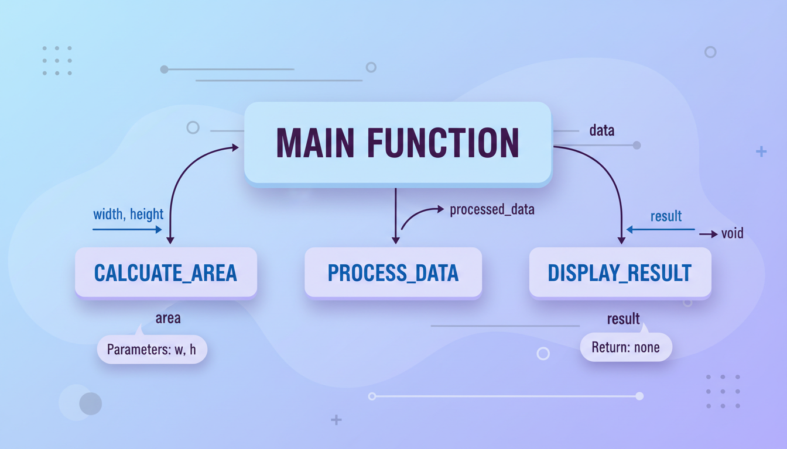

Поняття підпрограми
Підпрограма — це іменована частина програми, яка може бути викликана з інших частин програми для виконання певної дії. Використання підпрограм дозволяє:
- Уникнути дублювання коду
- Розбити складну задачу на простіші підзадачі
- Покращити читабельність та структуру програми
- Полегшити тестування та відлагодження
- Забезпечити повторне використання коду
У C++ підпрограми реалізуються у вигляді функцій. Розрізняють два типи функцій:
- Функції, що повертають значення — виконують обчислення і повертають результат
- Функції типу void (процедури) — виконують дії без повернення значення
Функції в C++
Функція — це іменована послідовність інструкцій, призначена для виконання певної задачі. Функція може приймати параметри і повертати результат.

Структура функції:
// тип_повернення ім'я_функції(параметри) {
// тіло функції
// return значення; // якщо функція не void
// }
// Приклад: функція, що повертає значення
int add(int a, int b) {
return a + b;
}
// Приклад: функція типу void (процедура)
void printGreeting(string name) {
cout << "Привіт, " << name << "!" << endl;
}Компоненти функції:
| Компонент | Опис | Приклад |
|---|---|---|
| Тип повернення | Тип значення, що повертається | int, double, void |
| Ім'я функції | Унікальне ім'я для виклику | add, calculate |
| Параметри | Вхідні дані функції | (int a, int b) |
| Тіло функції | Блок інструкцій у {} | { return a + b; } |
| return | Повернення результату | return a + b; |
Параметри та аргументи
Параметри — це змінні, оголошені в заголовку функції. Аргументи — це фактичні значення, що передаються при виклику функції.
Способи передачі параметрів:
1. Передача за значенням (by value) — за замовчуванням
Функція отримує копію аргументу. Зміни всередині функції не впливають на оригінал.
void increment(int x) {
x = x + 1; // змінюємо лише локальну копію
cout << "Всередині: x = " << x << endl;
}
int main() {
int a = 5;
increment(a); // передаємо значення a
cout << "Після: a = " << a << endl; // a = 5 (не змінилося!)
return 0;
}2. Передача за посиланням (by reference)
Функція отримує посилання на оригінал. Зміни впливають на оригінальну змінну.
void increment(int& x) { // & — посилання
x = x + 1; // змінюємо оригінал!
}
int main() {
int a = 5;
increment(a); // передаємо посилання на a
cout << "a = " << a << endl; // a = 6 (змінилося!)
return 0;
}3. Передача за вказівником (by pointer)
void increment(int* x) { // * — вказівник
(*x) = (*x) + 1; // розіменування + зміна
}
int main() {
int a = 5;
increment(&a); // передаємо адресу a
cout << "a = " << a << endl; // a = 6
return 0;
}Повернення значення
Оператор return завершує виконання функції і повертає значення в точку виклику.
// Повернення простого значення
int square(int x) {
return x * x;
}
// Повернення через параметри-посилання
void minMax(int a, int b, int& min, int& max) {
if (a < b) {
min = a;
max = b;
} else {
min = b;
max = a;
}
}
int main() {
int result = square(5); // result = 25
int mn, mx;
minMax(10, 3, mn, mx); // mn = 3, mx = 10
return 0;
}Прототипи функцій
Прототип функції — це оголошення функції без тіла. Він інформує компілятор про типи параметрів та тип повернення до фактичного визначення функції.
#include <iostream>
using namespace std;
// Прототипи (оголошення)
int add(int a, int b);
double power(double base, int exp);
void printMessage();
int main() {
cout << add(3, 5) << endl; // можемо викликати до визначення
printMessage();
return 0;
}
// Визначення функцій
int add(int a, int b) {
return a + b;
}
double power(double base, int exp) {
double result = 1;
for (int i = 0; i < exp; i++)
result *= base;
return result;
}
void printMessage() {
cout << "Hello!" << endl;
}- Функції можна викликати до їх визначення в коді
- Розділення інтерфейсу (.h файли) та реалізації (.cpp файли)
- Компілятор перевіряє правильність типів аргументів
Перевантаження функцій
Перевантаження (overloading) — це можливість мати кілька функцій з однаковим ім'ям, але різними параметрами (типом або кількістю).
// Функції з однаковим ім'ям, але різними параметрами
int max(int a, int b) {
return (a > b) ? a : b;
}
double max(double a, double b) {
return (a > b) ? a : b;
}
int max(int a, int b, int c) {
return max(max(a, b), c);
}
int main() {
cout << max(3, 5) << endl; // int версія: 5
cout << max(3.5, 2.1) << endl; // double версія: 3.5
cout << max(1, 7, 4) << endl; // 3 параметри: 7
return 0;
}Рекурсія
Рекурсія — це виклик функції самої себе. Рекурсивна функція має містити:
- Базовий випадок — умова завершення рекурсії
- Рекурсивний виклик — виклик функції зі зміненими параметрами
// Факторіал: n! = n * (n-1)!
// 0! = 1, 5! = 5 * 4 * 3 * 2 * 1 = 120
unsigned long long factorial(int n) {
if (n <= 1) // базовий випадок
return 1;
return n * factorial(n - 1); // рекурсивний виклик
}
// Числа Фібоначчі: F(n) = F(n-1) + F(n-2)
// F(0) = 0, F(1) = 1, F(2) = 1, F(3) = 2...
unsigned long long fibonacci(int n) {
if (n <= 1) // базовий випадок
return n;
return fibonacci(n - 1) + fibonacci(n - 2);
}
// Сума цифр числа
int sumOfDigits(int n) {
if (n == 0)
return 0;
return n % 10 + sumOfDigits(n / 10);
}Рекурсія може призвести до переповнення стеку (stack overflow), якщо базовий випадок ніколи не досягається або рекурсія занадто глибока. Для глибокої рекурсії використовуйте ітеративні алгоритми.
📝 Тести для самоперевірки
💻 Практичні завдання
Напишіть функцію power(base, exp), яка обчислює base^exp без використання pow(). Реалізуйте ітеративний та рекурсивний варіанти.
Напишіть функцію isPrime(n), яка повертає true, якщо число просте. Оптимізуйте: перевіряйте дільники до sqrt(n).
Реалізуйте функції gcd(a,b) (найбільший спільний дільник) та lcm(a,b) (найменше спільне кратне) через алгоритм Евкліда.
Реалізуйте перевантажені функції area() для: кола (радіус), прямокутника (сторони), трикутника (3 сторони — формула Герона).
Напишіть функцію swap() з параметрами-посиланнями для обміну значень. Використайте її для сортування трьох чисел.
Напишіть ітеративну версію fibonacci(n), яка працює за O(n) часу та O(1) пам'яті. Порівняйте швидкість з рекурсивною версією.
Напишіть функції: decToBin(n), decToHex(n), binToDec(str). Використайте рекурсію для decToBin.
Напишіть рекурсивну функцію quickPow(base, exp), яка використовує властивість: x^(2n) = (x^n)^2, x^(2n+1) = x * (x^n)^2.
Напишіть функцію analyzeNumber(n), яка через параметри-посилання повертає: кількість цифр, суму цифр, першу та останню цифри.
Створіть набір функцій: isEven(n), isPositive(x), absValue(x), roundToInt(x), maxOfThree(a,b,c). Оформіть у вигляді бібліотеки з заголовком mathutils.h.